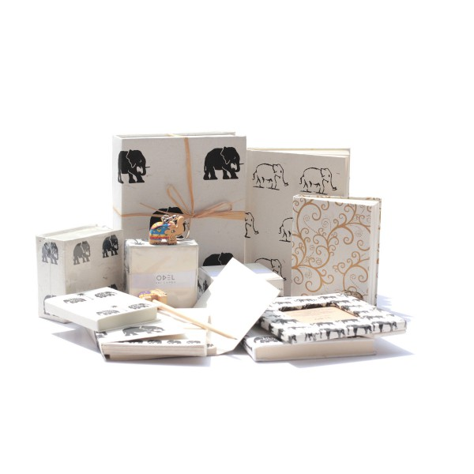
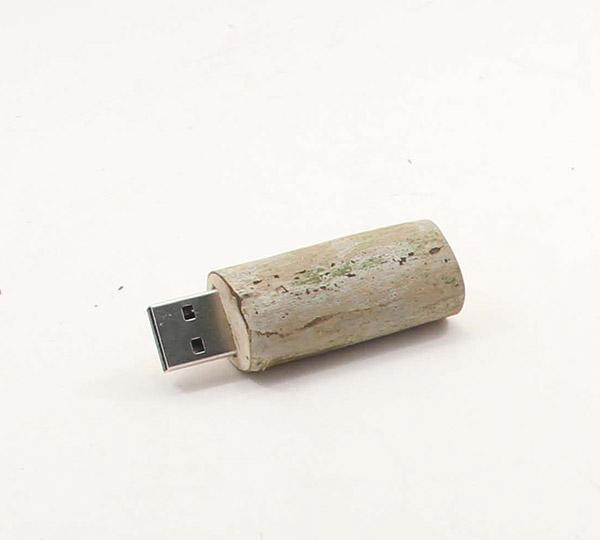
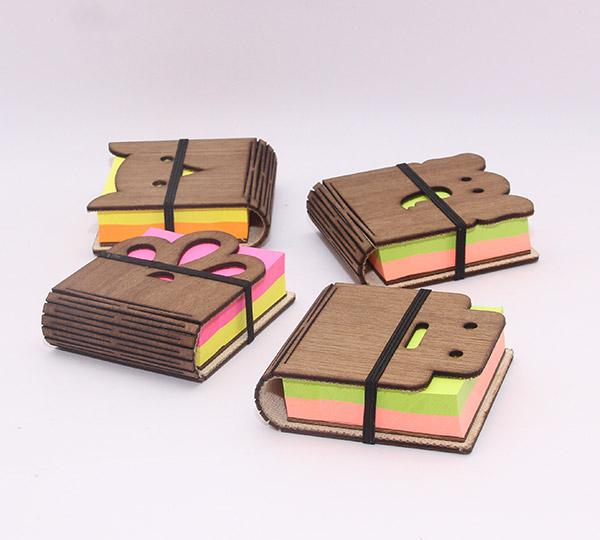
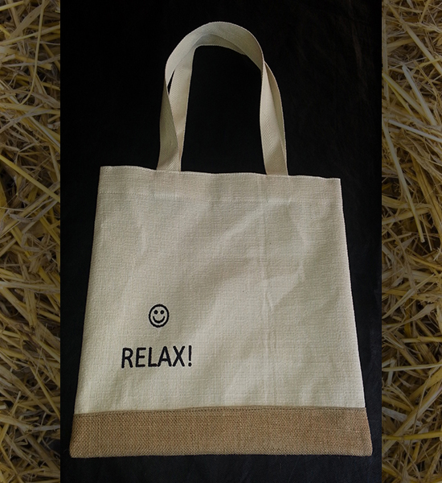

GiftSets

Complete range of custom designed products made from recycled paper ideal as a corporate gift pack, for use as hotel stationary or for retail outlets.
Wooden U.S.B Drive

Made using throwaway tea twigs collected from the famed Ceylon Tea plantations of Sri Lanka. Eco-friendly, Non-toxic and Recycled
Up-Cycled Wood Notepad

This cute and handy notepad is made using up-cycled pallet wood. Unique laser engraved bending techology. The notepads come in a few different designs and include a set of colourful sticky notes.
Monk Bag-Relax print

One of the most popular product of ours is the recreated version of the Monk Bag. This can be produced in various colours and prints.